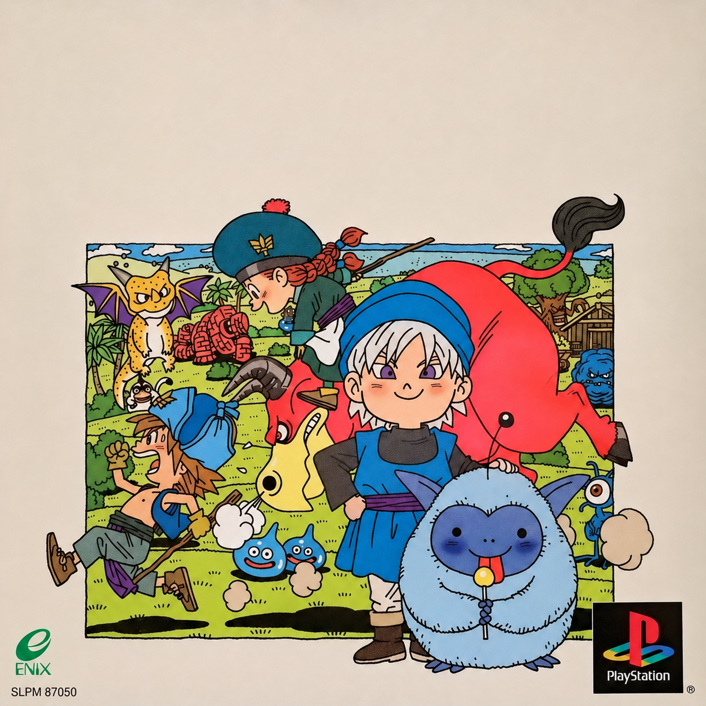
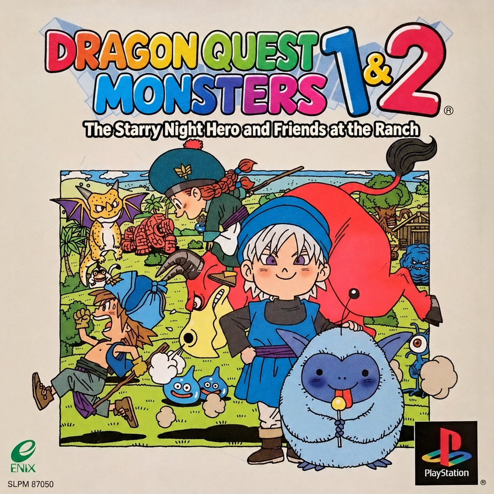
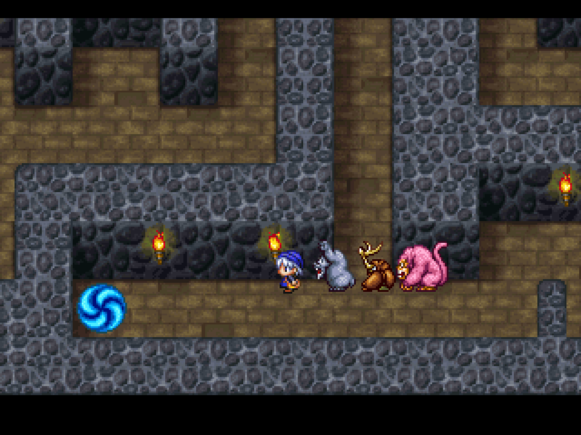
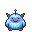

Meet the community
Talk monsters, trade breeding tips, follow the translation, or get a hand setting things up.
Join us on Discord

The Starry Night Hero and Friends at the Ranch
An English fan translation of the Japan-only PlayStation collection. Rediscover Terry’s, Cobi’s, and Tara’s adventures with your monster companions.
Friends for the journey.

Patch downloads
Download the translation package, then follow the setup instructions to patch your Japanese PlayStation game. The translation continues to improve through player feedback.
Includes the BPS patch, matching CUE file, and README.
Download v1.0.73See the included README for the full change history and credits.
Project page on ROMhacking.net

Keep your memory-card saves safe.
Back them up before updating your patch.
Released in Japan on as ドラゴンクエストモンスターズ1・2 星降りの勇者と牧場の仲間たち, Dragon Quest Monsters 1 & 2 remakes the first two Game Boy adventures in one PlayStation collection. It includes Terry’s story and both Cobi’s and Tara’s journeys, with richer pixel art, animated battles, and updated sound.
Recruit monsters, raise a party, and breed new companions who inherit their parents’ abilities. Explore strange worlds through Travelers’ Gates and mysterious keys. The PlayStation collection was released only in Japanese, leaving English-speaking fans hoping for a translation. Thanks to community effort, an English translation patch is now available. Many thanks to Kingcom and Tom, whose incredible early hacking and translation efforts inspired this independent project.
This is an unofficial English fan translation patch for the Japanese PlayStation release of Dragon Quest Monsters 1 & 2: The Starry Night Hero and Friends at the Ranch. It covers Terry’s, Cobi’s, and Tara’s adventures.
This project was started by diethylpentane (3xad). It is a separate project from Adrikvej’s translation.
Nejimakipiyo, who also worked on DQM: Delocalized for Game Boy, is helping refine the translation. Community playtesting, reports, and suggestions continue to improve the patch. You can propose corrections through the translation comparison.
Yes. The project uses AI assistance, mainly ChatGPT (Astra), with help from Claude Opus and Claude Fable, plus some Grok.
Mistakes are possible, and translation review and testing are ongoing. Corrections, explanations of awkward or inaccurate wording, and reproducible bug reports are welcome.
Yes. Several players have completed Terry’s adventure, and the patch reportedly works on a range of devices and emulators. That does not mean every part of every campaign or every setup has been checked.
Read the current release notes, keep backups of your memory-card saves, and share any problems you encounter.
No. The package contains the patch, its matching CUE file, and a README. You need your own original game image and any BIOS required by your emulator.
Use the latest patch download and setup instructions on this page. Extract the ZIP and read the included README for the package’s filenames, changes, and any release-specific instructions.
Use a clean, unmodified Japanese PlayStation BIN of the game, serial SLPM-87050.
a1217657786430ac1c3ad71f16cdadb65d47b0df9a7e30278900651c1f1eec29Apply each release to this original Japanese image, never to an already translated image.
.bps patch. Keep checksum validation enabled.Yes. The CUE’s own filename can differ from the BIN’s, but the quoted filename on its FILE line must exactly match your BIN’s filename, including .bin.
For example, if you rename the patched image to DQM-English.bin, edit that line in the CUE to:
FILE "DQM-English.bin" BINARYLeave the other CUE lines unchanged and keep both files in the same folder. Save the text file with a .cue extension, not .cue.txt, then open the CUE.
No earlier patches are needed. Each release applies directly to the clean Japanese BIN and includes the earlier translation work and fixes. Do not stack patches or apply a new patch to an already translated image.
Avoid loading save states from another patch version: they can restore old game code and bring old bugs back. A memory-card save carries your game progress without restoring that old running state.
Check the original BIN’s size and SHA-256 against the values above. Make sure you selected the clean Japanese image, not a previously patched image, and that you extracted the ZIP before selecting its BPS file.
Keep checksum validation enabled and resolve the mismatch before patching.
The patch restores monster table conversations and special dungeon floors: treasure/Mimic rooms, Lost Forest, the traveling colosseum, mazes, and sliding floors.
These restorations combine retained PlayStation assets with behavior adapted from the Game Boy original. Some mechanics and encounter rates are reconstruction choices.
In the Arena dining room, walk onto the east stool at the right table with one to three living, visible party monsters.
Revive any fallen party members first, and leave the stool before sitting again.
Leave through its north door. Travel Bookmark cannot be used inside the traveling colosseum.
Yes. v1.0.73 restores monster wagers in the title-screen Colosseum, which offers Free Battle, Enix Rules, and Local Rules. Choose Local Rules and enable prizes, which are off by default.
Local Rules also lets you set skill restrictions, total or individual level limits, allowed monster families, turns, a command timer, combos, and accessories. Set Turns to 0 for no turn limit.
A transfer saves both Adventure Logs. Back up your saves beforehand, and keep the game running with both memory cards inserted until both saves finish. If a card error occurs, retry without resetting. Resetting or losing power between saves can lose the prize monster.
In v1.0.73, open Tactics → Movement, just below Text Speed, in Terry’s, Cobi’s, or Tara’s adventure. By default, walking is 1× speed and holding R1 runs at 2×. You can set Walk and R1 speeds independently to 1×, 2×, or 4×, and choose Hold or Toggle. Toggle switches speeds each time you press R1.
Use Up/Down to select a setting and Left/Right to change it. Circle or Triangle applies changes; Cross cancels; Square cancels and closes the field menu.
Save normally to keep each adventure’s settings. Toggle stays active through doors, battles, and menus, but loading an adventure starts at Walk speed. Riding, sliding floors, and scripted movement keep their original controls.
Under Tactics → Movement, Time is the default: it keeps roughly the usual number of encounters per minute of travel, even when running. Distance uses the normal encounter rate per step, so faster movement brings battles closer together in time.
The field and combat displays have expanded HP/MP information, with current and maximum values and visual bars.
Duplicate items are grouped with quantities in the field item menu, battle item menu, and shop Sell menu.
To sell multiple copies of the same item, choose the quantity and confirm the sale. Using, discarding, or selling part of a stack keeps the remaining copies in the same inventory position.
No. The limit is still 30 items in total, and every copy counts toward it even when duplicates share a single menu row.
Bigger bags are planned, but are not available in the current patch.
Check that you are using the latest patch and read its release notes. Confirm that you patched a clean original image, then boot fresh and load a memory-card save instead of an old save state.
Some area transitions may take longer than in the Japanese game. If the problem persists, check existing patch issues, then open a bug report with the details needed to reproduce it.
Use the full bug report template below. Include your patch version, campaign, device and emulator or hardware, location, story progress, steps to reproduce, expected and actual results, and whether it repeats after a fresh boot from a memory-card save.
List any cheats or non-default settings. Screenshots or video and a memory-card save from just before the problem are especially helpful.
A save state from the affected patch version, captured before or during a freeze or crash, can also be useful for debugging. That is different from using a state from an older patch to continue playing after an update.
Check existing issues in dqm-psx/patch, then choose Report a bug on GitHub below. The button opens a prefilled issue with the full template. Review it, add your details and attachments, and submit it with your GitHub account. Opening the issue page does not submit it automatically.
Use the translation comparison to suggest a correction:
Opening a prefilled issue does not submit it; you must review and submit the issue yourself. You can also share the exact text, location, edition or campaign, and a screenshot in Discord. Include your proposed wording and explain why it would be clearer or more accurate.
Playtest, send reproducible bug reports with saves, review wording, and confirm whether a new release fixes a reported problem. Join Discord for discussion and setup help.
Use the breeding guide for recipes, pair finding, and team planning. The Discord community can also help with gameplay and breeding questions.
Talk monsters, trade breeding tips, follow the translation, or get a hand setting things up.
Join us on DiscordCheck the existing patch issues, then tell us your version, campaign, location, and how to reproduce the problem. Screenshots and a save from before the issue help.
Opens a prefilled issue in dqm-psx/patch. Review it, add your details, and submit with your GitHub account. Opening the page does not submit the report.
Patch version: Campaign (Terry / Cobi / Tara): Emulator + version, or hardware: Device / operating system: Location and story progress: Steps to reproduce: Expected result: What actually happened: Does it repeat after a fresh boot from a memory-card save? Cheats or non-default settings, if any: Screenshots or video: Memory-card save (preferably just before the issue): Save state (from the affected patch version, before or during the issue):